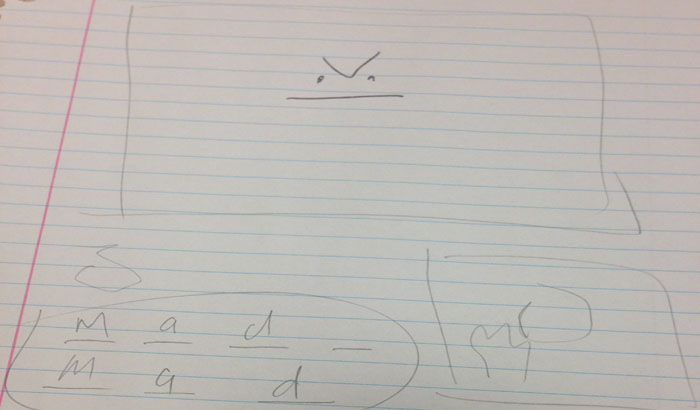
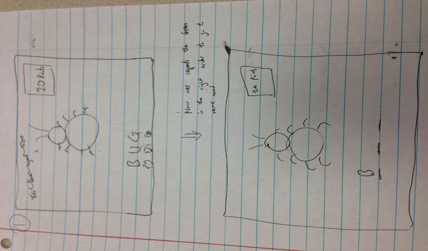
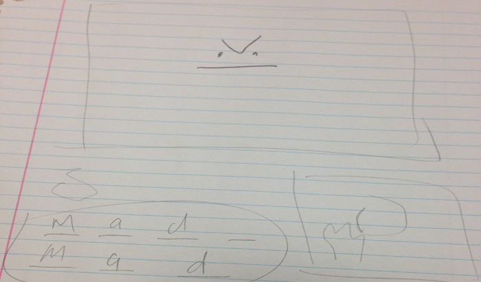
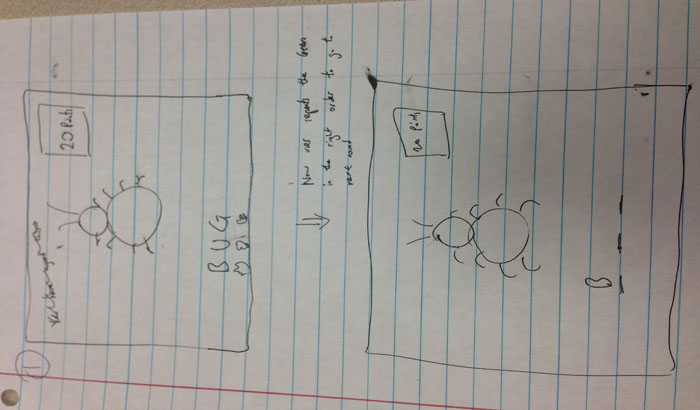

Project 4: John, Kevin, Spencer, Yijun
Prototype Video Prototype Sketches About Us
Many deaf people can't speak at all, so to communicate with others they would have to either type out their thoughts on the computer or sign their thoughts through a sign language, such as ASL. However, normal people do not understand any sign languages, which limits deaf people to communicate with them through typing. Unfortunately, typing expresses less words than signing per minute: while the average person can type in around 60 words per minute, a fluent sign language user can express around 200 words per minute. Our project is create a sign language translator that enables deaf people to communicate with normal people using the much faster option of signing rather than typing. Our application will visually display the translated English word for each sign the user creates.
 


